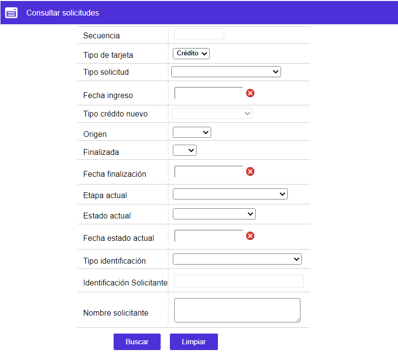
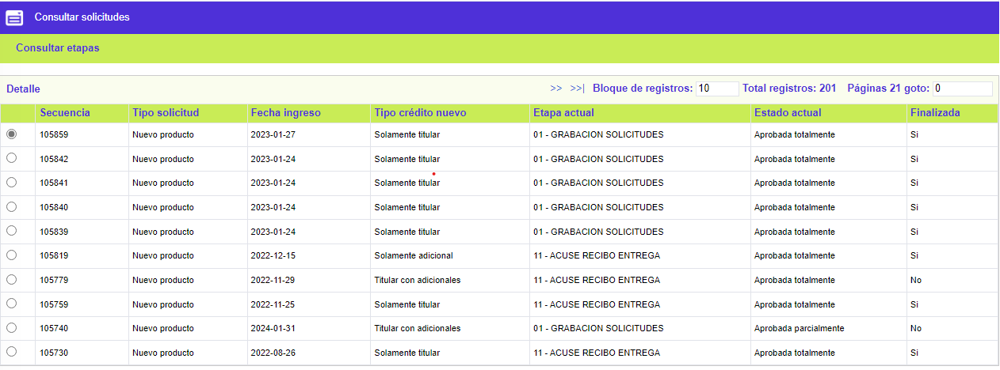
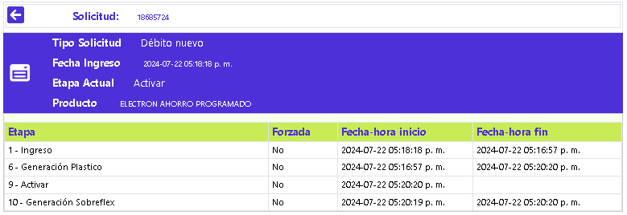
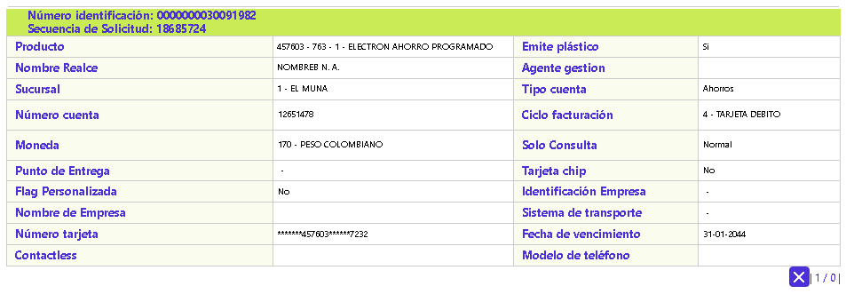

Consultar solicitudes
Esta opción permite consultar las diferentes solicitudes que se encuentran en cualquiera de las etapas por las que puedan pasar las solicitudes definidas por la entidad. La forma cuenta con un filtro de búsqueda, y lo hace con base en el perfil del usuario el tipo de solicitudes que le son permitidas consultar.
Filtro: Se pueden realizar consultas a través de los siguientes criterios:

|
Secuencia |
Permite registrar el número consecutivo que identifica a cada una de las solicitudes que se han gestionado en el sistema y que se requiere consultar. |
|
Tipo tarjeta |
Campo de salida, por defecto tiene el valor Débito. |
|
Fecha ingreso |
Campo que mediante la funcionalidad de un calendario permite indicar la fecha en la cual ingresó la solicitud como criterio para la consulta. |
|
Origen |
Campo que mediante la lista de valores tipo combo de la que puede seleccionarse: Interno, Externo o Internet, permite realizar consultas por los distintos orígenes. |
|
Fin Trámite |
Campo que posee lista de valores tipo combo, con los valores: Si o No, la solicitud ya finalizó y sirve como criterio de consulta. |
|
Fecha finalización |
Campo que, mediante la funcionalidad de un calendario, permite indicar la fecha en la cual se surtió la última etapa parametrizada para la solicitud como criterio para la consulta. |
|
Etapa / Estado |
Campo que posee lista de valores tipo combo de la que puede seleccionarse entre: Aprobada, Negada, Aprobada Notificada o Negada Notificada, la condición actual de la solicitud, usada como criterio de búsqueda. |
|
Tipo identificación |
Campo que posee lista de valores con los distintos tipos de identificación válidos para la entidad, que pueden ser usados como criterio de búsqueda de la solicitud. |
|
Identificación solicitante |
Campo en que debe registrarse el número de identificación del cliente para el que se realiza la consulta de la solicitud. |
|
Nombre solicitante |
Campo en que debe registrarse el nombre del cliente solicitante para el que se realiza la consulta de la solicitud. |
El sistema muestra el siguiente formulario de acuerdo a los datos ingresados en el filtro. Este formulario cuenta con los enlaces: Consultar etapas y Detalle.

Consultar etapas: Al invocar ese enlace, se muestra un nuevo formulario que ilustra cada una de las etapas por las que ha pasado la solicitud consultada, brindando información de interés, tal como si la etapa se surtió de manera forzada o no, fecha y hora de inicio y fecha y hora de finalización de la etapa.

Detalle: Esta opción muestra el wizard correspondiente a la Consulta de solicitudes.
